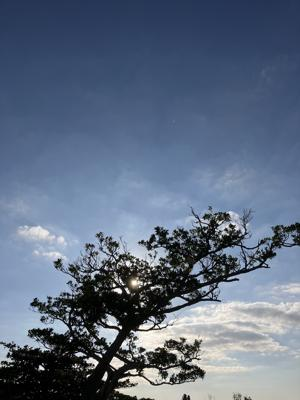
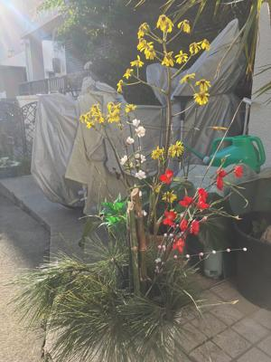
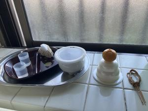
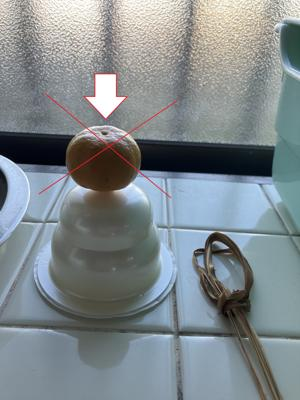

うるがいの話 ある日
最新: ミカンの向き【うるがいの話 ある日】とは 一日だけのプログです
『うるがいの話』の最新一日だけのプログで、通信料が少なく経済的だ。カニの画像をクリックすると全ての日付が載る『うるがいの話』サイトを表示します
|
|
【うるがいの話】 うるがい(ｳﾙｶﾞｲ urugai)とは、『もずくがに』の名前でとても大きくなります。 |
|---|---|
|
|
【カミマヤーの話】 猫のことを方言でマヤーといいます。カミマヤー（kamimayaa）とは、神の猫のことです。 |
|
【たながぁの音楽】 たながぁ（ﾀﾅｶﾞｰ tanagaa）とは手長えびのことで、何種類かあり大きいのは車 エビぐらいになります。 |

|
【ぶながぁの話】 ぶながぁ(ﾌﾞﾅｶﾞｰ bunagaa)とは、赤い髪の毛、赤い身体、そして身長は１ｍ２０ｃｍ ぐらい、川の蟹を食べているの目撃された。場所は沖縄県国頭郡大宜味村のと ある村僕の隣近所に住んでいる爺さんから、聞いた話です。 |
|
|
【ギーマの話】 ギーマ(giima)とは、山原の里山に咲くスズランに似た、 花を付けます。実は食べられます、 気が付くと口の周りが紫になっています。 |
2024年01月03日 (水）ミカンの向き
16:29
  
ヒノカンに置いてあった小さな鏡餅、ミカンが無かったのでシークワーサーを
のっけた。『頭おかしいじゃないの！、気持ち悪い』とヨメが、叫んだ。ん？
、乗っけるミカンのへた（木にぶらさがっている方）は、上だと。フーン、ネ
ットで調べた。お義母さんの世話を泊まり込みでイライラしているヨメに、さ
かわらず素直にミカンの向きを変えた。しかし、よくヘタをしたに置けたよね
とイヤミを言われる。お義母さんは、『ホームに戻るよ』といわず『とデイケ
アサービスに行くよ』といって、朝の８時５０分にホームに送る、午前中まで
天気が良くラッキーだった。

夕方５時前に子供が家に来てオードブルを食べながら話していると、全日空の
飛行機が、燃えている映像をライブでテレビから放送、あれよあれよを燃え尽
きる。今年の正月はと、子供も驚いた。
１６時１９分 ビットコインの総資産 ￥１８、６４４（↑１３２）